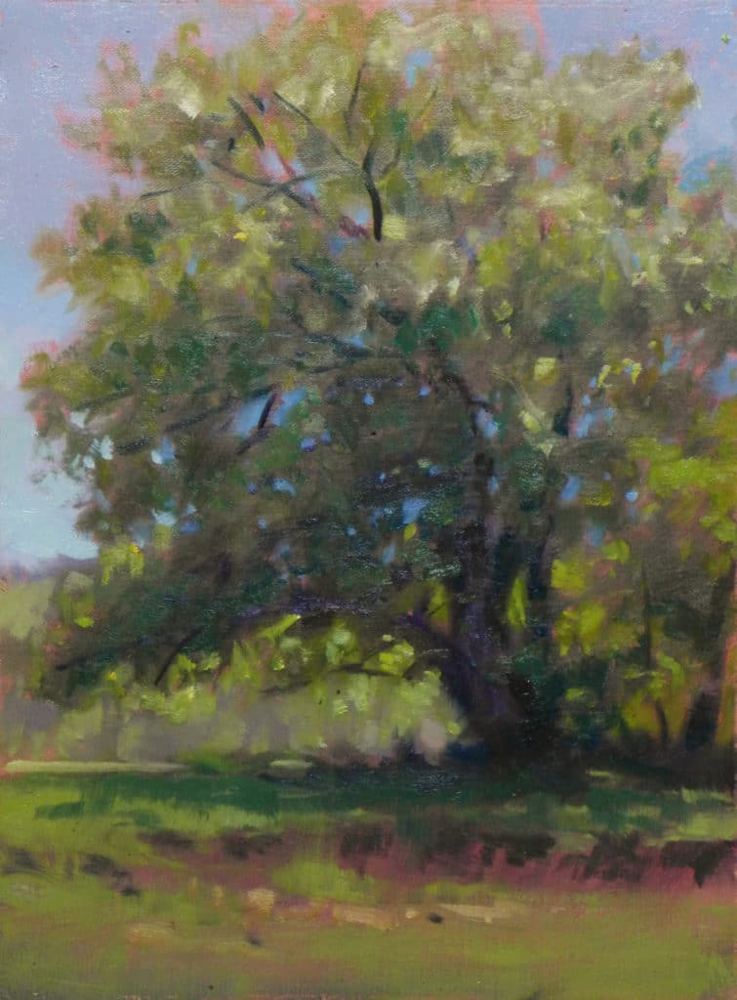

Poems
Amputation

The sky absconds with the cedar, the owners having deemed it more nuisance than asset. The value recouped by its absence trumps a tire swing or shady respite’s worth. Implausibly, the aim of property is horizontal. The men administer the apparatus. The tree is trussed, a show of tensile might. It is so bound that severance from its stump does not a skosh upset its upright stance. The apparatus, dwarfing its rent captive, slowly pulls it aloft, the vale of clouds reclaiming this excrescence of the earth. It flies like so many addled finches in twiggy nests, thinking: there goes the neighborhood. Leering from a facing kitchen window, I avert my eyes, so the possibility still exists the cedar shook its fetters and barreled towards the moon, to the chagrin of all its hardhat captors. The moon, if nothing else, won’t countenance a lawn.
Michael Esparza is a writer based in Philadelphia. He once got a short story published in a small, now-inactive online-only mag whose archives he cannot procure. He is entering the ninth and final year of his PhD program in English. He feels just fine about that.